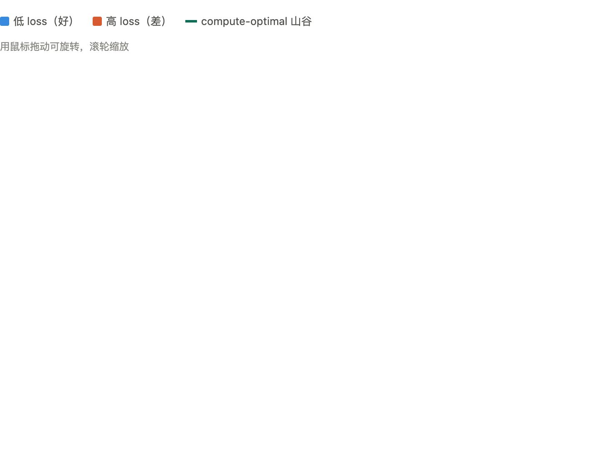

Reading note · Recall-first checklist
Scaling Laws, Carefully：给未来自己的复习卡
这不是普通读书笔记，而是一份用来对抗遗忘的技术复习页。目标是几天后回来时， 先被问题唤醒，再用图像定位，最后用折叠答案补漏洞。
0. 30 秒回忆
先不要看答案。只用这三个问题检查自己是否还抓得住主线。
- Scaling law 讨论的核心资源分配是哪三个量？它们之间最粗的关系是什么？
- Kaplan 和 Chinchilla 的分歧，究竟是“模型大小”问题，还是“模型和数据如何一起增长”的问题？
- 为什么 scaling law 拟合里的小误差，在外推到大模型时会被放大成大偏差？
1. Mental Model
我现在对 scaling law 的理解是：它不是一句“大模型更好”的口号，而是在问
给定训练算力 C，参数量 N 和 token 数 D 应该怎样分配。
最粗的约束是 C ≈ 6ND。当 C 固定时，N 和 D 的乘积固定；
如果 N 变大，D 就必须变小，反过来也一样。
Kaplan 和 Chinchilla 的争论可以压缩成一句话：算力增长时，是让模型比数据长得更快， 还是让模型和数据大致同速增长？Kaplan 的局部指数偏向更快增大 N； Chinchilla 的结论更接近 N 与 D 同速增长。
2. Visual Anchor

看图前先问
绿色山谷线应该回答什么问题？它不是某个模型，而是一组 compute-optimal 的 N、D 配比。
容易忘的点
Kaplan vs Chinchilla 的分歧可以看成山谷线斜率问题，不一定需要塞进 3D 曲面才讲清楚。
下次改图
重新导出主体曲面，或改画 2D 外推图：小规模区间几乎重合，外推后裂开。
3. Checklist
使用方式：先只看题目，脑内作答；卡住再展开。每题的答案都被压成“记忆钩子 + 解释”。
Q1. C ≈ 6ND 固定时，N 和 D 是什么关系？C 增长 100 倍时两派怎么分配？
记忆钩子：C 固定时，N 和 D 是跷跷板；C 增长时，指数决定新算力更偏向模型还是数据。
C 是训练 FLOPs，N 是参数量，D 是 token 数。6 可以理解成一次 token/参数交互的大致前向与反向成本。 C 固定时，ND 乘积固定。若 C 增长 100 倍，Kaplan 的 N ∝ C^0.73 让 N 约增 28.84 倍， D 只约增 3.47 倍；Chinchilla 的 N ∝ C^0.5 则让 N 和 D 都增 10 倍。
Q2. Kaplan vs Chinchilla 的核心分歧是什么？undertrained 和 overfitting 有什么不同？
记忆钩子：Gopher 不是“背过头”，而是“没喂饱”。
Kaplan 更支持训更大的模型并在收敛前停止；Chinchilla 更支持相对小一些的模型加更多数据。 Chinchilla 形容早期大模型的词是 undertrained。过拟合是重复看数据后记住噪音，泛化变差； 欠训练是还没学够就因算力耗尽而停下。
Q3. Data-Infinite Region 保证了什么？为什么经典过拟合不该出现？
记忆钩子：无限不是一次训练用无限多，而是每次需要时都有新 token。
Data-infinite 的核心是假设数据池总能供应不重复的新 token。单次训练实际 D 仍然有限， 但不用重读旧数据。经典过拟合依赖重复曝光和记噪音；如果 token 单遍经过，主要风险更像欠训练， 不是把同一批样本背熟。
Q4. N ∝ C^n 是幂函数还是指数函数？为什么不要和指数衰减混淆？
记忆钩子：C 是底数，n 是固定指数，所以是 power law。
N ∝ C^0.73 中变量是 C，0.73 是固定指数，因此是幂函数。它在 C > 0 的训练预算区间单调增加， 增速变慢但不会在正无穷处趋于 0。不要把它和 y = a^x 这种指数函数或指数衰减混在一起。
Q5. 除了是否收敛，还有什么技术原因让 Kaplan 和 Chinchilla 指数不同？
记忆钩子：数不数 embedding，在小模型上会改变斜率，在大模型上影响变小。
Kaplan 数的是非 embedding 参数，Chinchilla 数总参数。Embedding 更像查表，几乎不产生主要矩阵乘法 FLOPs。 如果 N = N_E + ωN_E^(1/3)，embedding 项和非 embedding 项的比例约为 ωN_E^(-2/3)，规模越大比例越小。 因此小规模区间的局部指数可能更像 0.73，大规模时逐渐滑向 0.5。
Q6. 为什么 power law 可能自然出现？manifold 和 quantization 两个解释差在哪？
记忆钩子：一个把知识看成连续切分，一个把知识看成离散技能块。
Manifold 切分假说认为模型把数据所在低维流形切成 O(N) 块，每块尺度约 N^(-1/d)，切得越细误差越小。 d 越大，同样增加 N 带来的误差下降越慢。Quantization 模型则把知识看成按频率分布的离散技能： 常见技能先学，罕见技能后学，也会诱导幂律式 loss 下降。
Q7. Data-limited 区域里，D = U_D(1+R_D) 和 D' 分别表示什么？
记忆钩子：D 是总曝光，不等于有效新信息。
U_D 是 unique token 数，R_D 是重复次数。D = U_D(1+R_D) 是模型实际看过的总 token 曝光量。
因为重复 token 的边际价值低于新 token，所以引入有效数据量 D'：
D' = U_D + U_D r_D (1 - exp(-R_D / r_D))。当 R_D 趋于无穷时，
D' 封顶到 U_D(1+r_D)，表示重复训练有价值但不能无限等价于新数据。
Q8. r_N 和 r_D 的半衰期分别在说什么？r_N < r_D 意味着什么策略？
记忆钩子：多余参数贬值比重复数据更快时，算力应更偏向“多训一点”。
r_D 描述重复数据边际价值衰减，r_N 描述过度参数化时多余参数价值衰减。 r_N < r_D 意味着多余参数的边际收益更快失效。算力有限且数据有限时， 盲目增大模型不如更多利用现有数据。
Q9. 为什么 scaling law 拟合对小误差特别敏感？
记忆钩子：问题不在拟合当下，而在外推距离。
Scaling law 常在小模型上拟合，然后外推到大几个数量级的模型。log-log 空间里的斜率就是幂律指数， 指数上看似微小的误差，映射回原尺度后会随外推范围被放大，最终可能变成一个数量级的预测差异。
Q10. Besiroglu et al. 复现 Chinchilla Method 3 时发现了哪些工程坑？
记忆钩子：理论曲线优雅，落到代码里会被 sum/average 和取整这种小事改变。
他们从论文图中反推散点重新拟合，发现 Method 3 的实现细节会影响结果： 一是 Huber loss 聚合时用 average 而不是 sum，会把 loss 绝对量级压小，让 L-BFGS 提前停止； 二是指数只报两位小数，log-log 外推会放大这种舍入误差。这解释了为什么 Method 3 与 Method 1/2 不一致。
Q11. loss function 为什么像训练的“罗盘”？sum 换 average 为什么会坏？
记忆钩子：average 改的不是方向，而是罗盘刻度。
Loss function 把模型预测和真实目标的差距压成一个优化器能下降的数字。若本该对样本损失求和却取平均， 总 loss 的绝对尺度会被压小。某些优化器会据此误判下降空间不大，从而提前停止，导致参数没有真正拟合到位。
Q12. Huber loss 为什么小误差用平方、大误差用线性？
记忆钩子：让正常点保持好优化，让异常点失去绑架全局的特权。
Huber loss 在误差小于阈值时像 MSE，光滑且利于优化；误差很大时像 MAE，线性增长，避免异常点因平方惩罚过大而拖歪拟合线。 在 Chinchilla 场景里，训练失败或 loss 异常的模型就是坏点；使用 Huber 是合理的，真正的坑在后续聚合实现。
4. Concepts I Keep Mixing Up
5. My Current Takeaway
- Scaling laws 最重要的不是公式形式，而是训练资源如何分配。
- Kaplan 和 Chinchilla 可以同时在各自规模区间内“看起来正确”。
- 欠训练和过拟合不是同一个失败模式，不能混用。
- 在 data-limited 场景里，重复数据和堆参数都要看边际价值衰减。
- 拟合 scaling law 时，工程细节会通过外推被放大成理论结论上的偏差。
6. Next Review
下次复习只做三件事：先口头重推 C ≈ 6ND，再解释 undertrained vs overfitting，
最后闭卷说出 sum vs average 为什么会影响 Chinchilla Method 3。